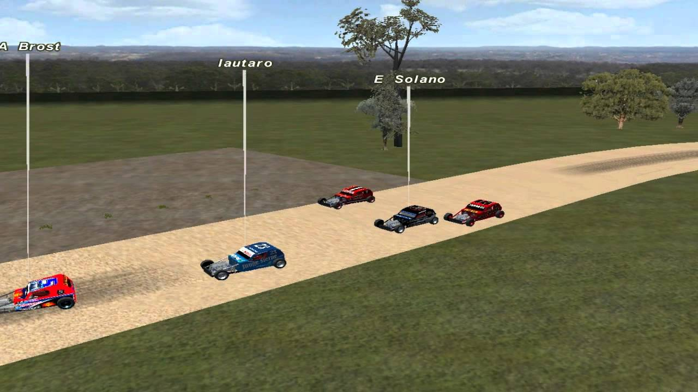

Con la ayuda de Mauricio Herve se estaria terminando Loberia El modelador Mauricio "MR Oblongo" Herve estaria terminando el circuito "Virgen del Camino" para que todos los simracers lo puedan disfrutar. Circuito Loberia  Largada Loberia Previous Next